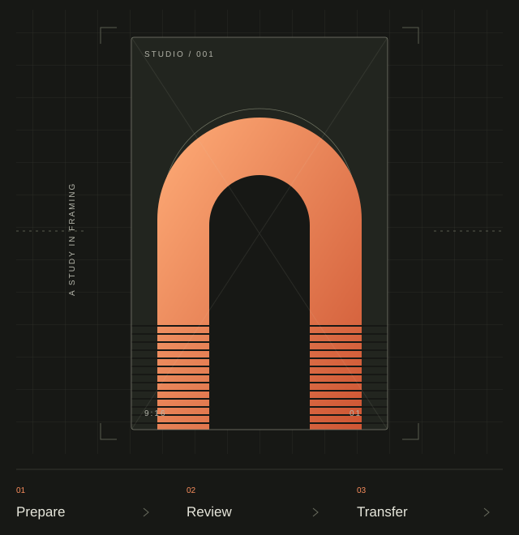

Bring your work together.
The app is intended to help you organize selected video files on your Windows computer and prepare them for the next step.
Windows desktop app / Planned
Monroy Studio is a planned Windows desktop app for creators to organize, prepare and review their videos, then transfer them through official social platform integrations.
In development. No public download is offered on this website.

01 / The planned workflow
One considered path from a local video file to a reviewed transfer. These capabilities are planned for the Windows application.
The app is intended to help you organize selected video files on your Windows computer and prepare them for the next step.
The planned workflow places video preparation and review before any transfer, so you can decide which content to send.
The first planned integration will send a selected local video to TikTok after your authorization. You will review and complete the post in TikTok.
02 / Development, openly
Monroy Studio is an independent application project. The Desktop app and TikTok integration have not yet been implemented. This website does not connect accounts, accept video uploads or publish content.
The first version is planned around local video files and TikTok’s official authorization and upload flow. No TikTok approval, partnership or endorsement is claimed.
Planned / Not yet available
Login Kit with OAuth and PKCE, account information for identifying the connected profile, and video transfer through the Content Posting API’s Upload flow.
Creator-led completion. Review and publication will take place inside TikTok. Direct Post is outside the first-version scope.
Local-file architecture. Original videos are intended to stay on your Windows computer until you choose to transfer them to TikTok. No Monroy-hosted video storage or remote user database is planned initially.
03 / A few details
No public download or account connection is offered here. The Windows app and its TikTok integration have not yet been implemented, with no release date announced.
The first planned version uses TikTok’s Upload flow. After you explicitly authorize a transfer, you will continue to TikTok to review and publish. Direct Post is not included in this version.
The planned connection uses TikTok’s own OAuth authorization screen. Monroy Studio will not ask you to enter your TikTok password into this website.
See the Privacy Policy, Terms of Service and contact page. The official support and privacy email is monroystudio.support@gmail.com.
Questions about Monroy Studio? Start with the project contact page.